Facebookに、
13年分の自分が
いました。
肩書きは、ヤスムラミチヨシ。
安村通芳（やすむら みちよし）｜広島県廿日市市で、13年。
使われていない場所を、人が集まる場所に変える仕事をしています。空き家も、廃材も、倉庫も、キッチンカーも。ひとことで言える仕事じゃないので、名前がそのまま肩書きになりました。
その13年ぶんの記録を、
全部AIに読ませてみました。
自分でも気づいていなかったことが、出てきました。
SCROLL
ボタンや仕掛けが反応しない場合は、このファイルをSafariやChromeなどのブラウザで開いてください。
iPhoneは共有メニューから「Safariで開く」、またはファイルに保存してから開けます。
42歳になる前に、13年分のFacebookを全部ダウンロードしてみました。
投稿1,992件、写真8,633枚。
白状すると、自分では全部読んでいません。読み切れる量ではありませんでした。
だから、AIに読ませました。数えるところと、探すところは、まるごとまかせています。
これ、誰でもできます。
Facebookには、自分がこれまでに書いた投稿と、あげた写真を、まとめてダウンロードできる機能があります。
申し込んで待つだけです。自分の何年分かが、ある日そのまま手元に届きます。
あとは、それをAIに渡します。やったことは、それだけでした。
僕の場合は、それが13年分ありました。
開いてみるまで、そんなに書いていたことも忘れていました。
確かめたかったのは、ひとつだけです。
自分の記憶にある日付と、記録に残っている日付が、合っているかどうか。
結論から言うと、だいぶズレていました。覚えていない年も、まるごとありました。
僕には「毎年恒例の誕生日企画」があります。35歳のときは、半生を年表にして公開しました。
今年は42歳。年表じゃなく、記録そのものを機械に全部読ませてみることにしました。これが今年の分です。
立派な成功談ではありません。うまくいかなかったことも、そのまま置いてあります。
これから何かを始めようとしている人には、こんな進み方もあるのかと思ってもらえるかもしれません。
そして、これを読んで自分の分もやってみたくなったら、ぜひやってみてください。
作り方は、このページの最後にも書いておきます。
自分が何をしてきたかは、自分がいちばん忘れています！
はじまり
ふつうの父親でした
記録が始まった日から、止まる日まで
2011年7月〜2013年8月
- 14
- 投稿
- 17
- 写真
- 13
- 書いた日
13年分をさかのぼって、いちばん古いところに出てきたのがここでした。
記録は2011年7月1日から始まっています。
26か月で14件、全部あわせて898字。
少なすぎるので、この期間だけは全部そのまま載せます。
13年のうち、書いたものが1文字残らず載る章はここだけです。
私が写っている写真を添付
複数あったアカウントを一つにしました(^-^)
改めて宜しくお願いしますm(_ _)mえ～、突然ですが今日広島に帰ってきましたヾ(＠⌒ー⌒＠)ノ旧友の皆様よろしくお願いします。
iPhone復活(￣^￣)ゞ
その間に着信50件（ーー；）
連絡返せてなかったかたがたすみませんm(_ _)m一緒に応募すると当選率2倍らしいよ？
昨日、広島県で唯一のミシュラン公認の三つ星店「なかしま」におじゃましました！
初めての割烹料理にワクワクしてましたが、店内の落ち着いた雰囲気と高級感ある内装に若干緊張・・・
それを察してか、隣で奥さんがニヤニヤしてました(^^;;
少し早めの時間に予約したのが良かったのか店内は貸切状態。そのおかげでお店の大将と女将さんとゆっくり話すことができ、お店の歴史からお二人の仕事に対する信念、ミシュラン掲載の経緯や裏事情まで。。。
イイ話をたくさん聞かせていただきました！（ミシュランに掲載されてからは予約の電話が一日に100件〜200件あるそうです)
特にお二人の料理と接客に対する情熱と真摯な姿勢には本当に心を打たれました！
モチロン味も絶品♫
お前に味が分かるのか？と突っ込まれそうですが、味にうるさい奥さんもご満悦の様子でしたので間違いないハズ！
とてもイイ刺激になったのでまたおじゃましたいと思います♫
ミシュランの裏事情が気になる方は次にお会いした時の話しのネタにさせていただきます！行きたい～(>_<)
今日は一年ぶりの動物園(^_^)
久しぶりのキリンにびびる子供たち笑いやー、今日は最高だったね！
上海の山口夫妻ありがとうございました♪( ´▽｀)オープンが楽しみだ♪( ´▽｀)
ちょっと前に家族で出雲に行きました。奥さんがとても気に入ったらしく、今度は神在月にまた行きます(^_^)
面白そうなイベント発見‼
誰かウチの家族と一緒に行きません⁇今日はプラレールからの宮島！
水族館でアシカショーに子供達大興奮(^_^)
写真も、この26か月で17枚しかありませんでした。
大きく出した5枚のほかは、これで全部です。
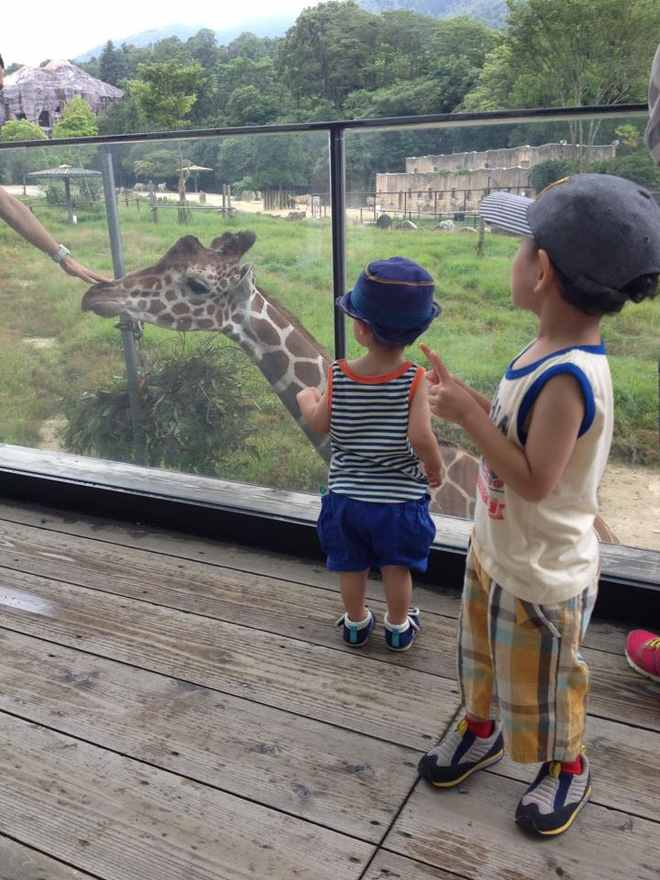
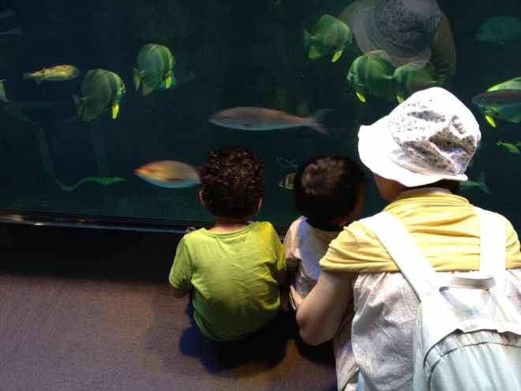
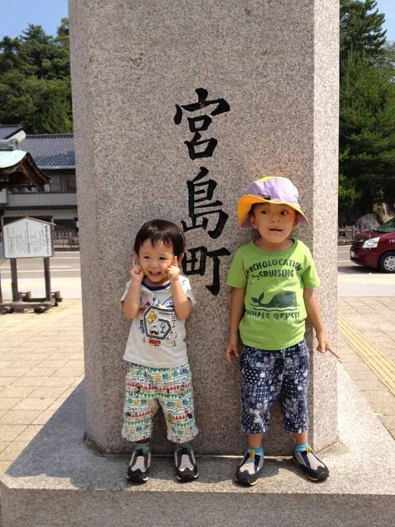

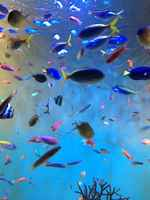


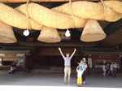
2011年7月から2013年8月までの写真、残り全部
読み返して、気づいたことが2つあります。
ひとつ。広島に帰ってきた日のことが、45字で終わっていました。
え～、突然ですが今日広島に帰ってきましたヾ(＠⌒ー⌒＠)ノ
旧友の皆様よろしくお願いします。2012年3月14日
人生でいちばん大きな引っ越しだったはずですが、書いてあるのはこれだけです。
ふたつ。26か月で書いた898字のうち、455字がたった1件に入っていました。
特にお二人の料理と接客に対する情熱と真摯な姿勢には本当に心を打たれました！2013年5月30日
ミシュランの店で、大将と女将さんから仕事の話を聞いた日です。
半分がこれということは、ほかは本当に何も書いていません。
いま思えば、人の仕事の話を聞いて長々と書いてしまうところだけは、このころから変わっていません。
仕事の話は一件も出てきません。まちのことも、事業のことも、何ひとつです。
ここにいるのは、休みの日に子どもを動物園と水族館へ連れて行く父親です。
それだけです。
このあと自分が何をすることになるのか、たぶん本人がいちばん知りませんでした。
今日はプラレールからの宮島！
水族館でアシカショーに子供達大興奮(^_^)2013年8月28日
これが、記録が止まる直前の投稿になります。
次にまとまった文章が出てくるまで、ここから20か月あきます。
2011.07–2013.08 ／ 投稿 14件（全文掲載）／ 898字 ／ 写真 17枚（全点掲載）／ 仕事の話 0件
20
か月、記録がない
序章
空白
記録が消えていた20か月に、創業していた
2013年9月〜2015年4月
- 2
- 投稿
- 0
- 写真
- 2
- 書いた日
順風満帆な人は、この数字を「へえ」で通り過ぎると思います。それでいいんです。
でも、SNSを開いたまま何も書けずに閉じた夜を知っている人は、たぶんここで指が止まります。
止まった人へ。この章は、あなたと僕の話です。
僕の13年でいちばん長い沈黙が、いちばん人生が動いた時期に重なっていました。
2013年8月を最後に投稿が止まって、次にまとまった文章が出てくるのは2015年5月です。
その間に書いたのは2件、写真は1枚もありません。
2014年に塗られているのは、たった2日ぶん。この2日に何を書いたのか、僕は今回読み返すまで覚えていませんでした。
このビューアではマスを押しても開きません。ブラウザで開いてください。
2014年に僕がFacebookでしたことは、この2回だけでした。
9月21日。よそのお店のページを「すすめて」、書いたのは『かっこいい！』の一言。
9月27日。別のお店を、無言で「すすめた」。
どちらも、他人の店の話です。自分のことは、一度も書いていません。
でも、他人への拍手だけは、やめていなかったみたいです。
書いていない時期にも、何かはやっていました。
あなたのタイムラインにも消えている時期があるなら、そこに何が残っているか、一度だけ見てみてください。
この20か月に何をしていたのかは、9年後に僕自身が書いていました。
広島に戻った当初は数人の友達しかおらず廿日市市に至っては1人も知り合いがいない、
という普通の感覚ならおよそ起業するには首をかしげるしかない状況の中、
初めての事業「Kazari-カザリ-」をスタートしました。2023年1月3日
初めて住む街にいきなり土地を買って、家建てて
今振り返るとホントに無茶なコトしたな〜と思いますw2021年9月6日
会社を辞めたとき、次の当てはまったくありませんでした。
ただ、そのころ出てきたメルカリのようなC2Cのサービスには、可能性を感じていました。
だからその領域のサービスをとにかくたくさん使って、知見をためて、古着のオンラインショップを始めました。
やったのは、それだけです。
当てがないまま、使って、覚えて、始めました。
書かなかったんじゃなくて、書く余力がありませんでした。
写真が1枚もないというのが、たぶんいちばん正直な記録だと思います。
元気なときは、なんだかんだ言って何かしら撮っているので。
2013.09–2015.04 ／ 投稿 2件 ／ 写真 0枚 ／ ここに置いた1枚だけ、日付がない
2015
再起動
イベント企画で、人生が動き出す
- 65
- 投稿
- 148
- 写真
- 55
- 書いた日
2015年5月、投稿が再開します。ページのいちばん上のグラフが伸びはじめるのは、この月です。
きっかけは、足場板などの古材を扱う広島の木材会社・WOODPROの中本敬章社長に声をかけていただいたことでした。 使われていない施設の一角で「ONE DAY MARKET」というイベントを企画することになります。
ONE DAY MARKETというイベントを企画することになり
僕の人生は大きく変わっていきました2023年1月3日

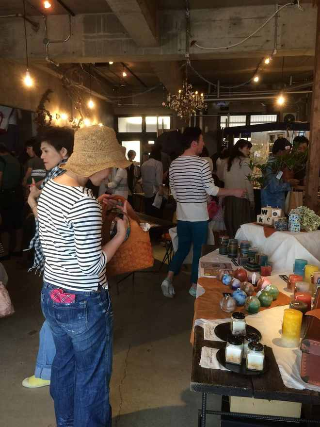


この照合は、外れていてもおかしくありませんでした。
「人生が変わった」なんて、あとから美化されがちな日付だと思うので。
その月の記録を、開いてみました。
記憶とログが一致した
「人生が変わった」と僕が書いた月と、投稿がまた増えはじめた月が、重なっていました。
僕は自分の投稿数なんて数えたことがありません。
だからこれは、あとから作れる一致ではありません。
記憶って、案外ちゃんとしているんだなと思いました。
同じ年の8月、初めて自分で企画した「ポートマルシェ」を開きました。 十日市町をチラシを配って歩いて、猛暑の中で初回を成立させています。
そして9月、自分の住む町が「消滅可能性都市」（人口が減っていずれ存続が危ぶまれる、と名指しされた自治体）に指定されていることを知ります。
まさか自分が住んでいる廿日市が消滅可能性都市になっているとは思いませんでした。。
子供達のタメにも将来廿日市が存続できるように、自分にできることで貢献しよう。2015年9月3日
いま読み返すと、ここが出発点だったんだと思います。
統計の中の言葉でしかなかった「消滅可能性都市」を、自分の住所の話として受け取ってしまった。
しかもこの投稿、最後は誰かへの報告ではなく「貢献しよう」と自分に言い聞かせて終わっています。
そしてこのあと13年、僕のやることはだいたい同じになっていきます。
数字や制度の陰に隠れて数えられていない人を見つけて、自分の手が届く範囲で試す。
大きなことは、たぶん最後までできていません。
 ヤスムラ ミチヨシ当時の投稿
ヤスムラ ミチヨシ当時の投稿昨日の「ポートマルシェ」初回ということもあり、 少し準備にバタバタとしましたが無事に開催することができました！ 猛暑の中にもかかわらず、会場にお越しになっていただいたお客様、 また共にイベントを盛り上げていただいた参加者の皆様、 本当にありがとうございました♪ 来月以降からもドンドン内容を充実させ、 もっともっと楽しいイベントにしていきたいと思いますので、 これからも応援宜しくお願いします！！


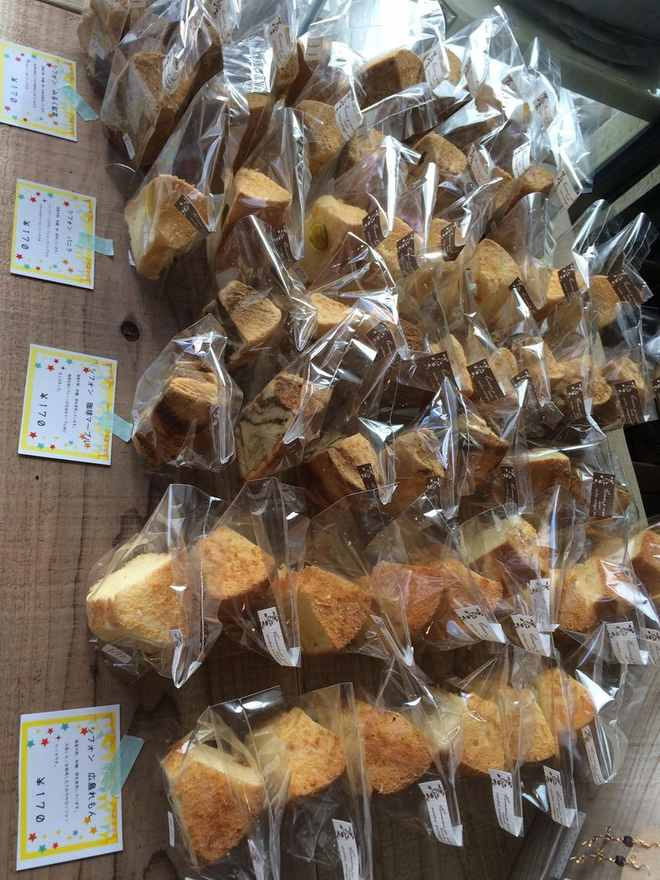


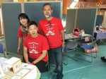


2015年に投稿した148枚から、20枚。ONEDAY MARKETとポートマルシェの会場です。
2015.01–2015.12 ／ 投稿 65件 ／ 写真 148枚 ／ このページに 26枚
2016–17
場をつくる
空き倉庫を〈レインボー倉庫〉に変えた2年
- 494
- 投稿
- 1,592
- 写真
- 316
- 書いた日
2016年8月、1年がかりで広島初のグランピングイベントを成立させました。 使われていないキャンプ場に、手作りのキャンドルとジビエと音楽を持ち込みました！
きっかけは、WOODPROの中本敬章社長との、忘年会のような交流会での会話でした。
そこで初めて「グランピング」という言葉を知ります。
当時、国内の実施例は東京での小規模なイベントだけという状態でした。
それから具体的な企画を考えて、改めて中本社長に提案したのが始まりです。
0から準備を進めて約一年がけの企画でした(^^;;
仲間を集め、開催場所の許可を取り、協力者を募り、理想のヴィジョンを現実にする為に
コツコツ努力した一年でした…
まずは年内の法人化に向けて準備を進めていきます！2016年8月30日
「使われていない場所 ＋ 人の輪 ＝ 新しい市場」。
いま振り返ると、僕の仕事のかたちは、たぶんここで出来上がっています。
このあと同じやり方を、空き倉庫に、空き家に、キッチンカーに、そのまま持っていくことになります。
新しいことをやっているつもりで、ずっと同じことをやっていた、とも言えます。
ヤスムラ ミチヨシ当時の投稿etc.CARAVANのメンバー達と岩倉キャンプ場へ・・・ 現地で会場装飾備品の設置確認や搬入経路の確認をしてきました。 まだなーんにもない場所ですが、 設営後の会場雰囲気を頭の中でイメージしたらワクワクが止まりませんでしたｗｗ


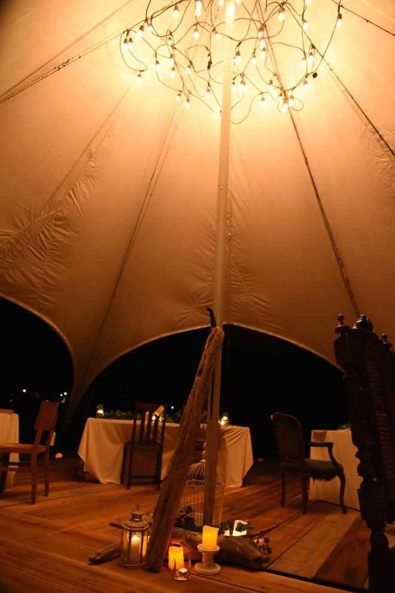
主催した僕らが、たぶんいちばん楽しんでいました♪

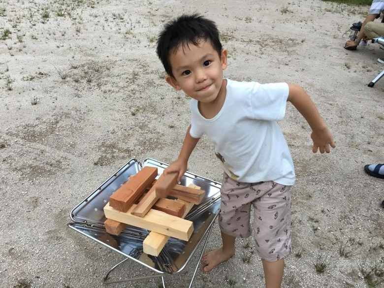
ただ、この話を成功譚で終わらせるわけにはいきません。
グランピングは、廿日市市には根付きませんでした。それを3年後に、僕はこう書いています。
ですが、その後の廿日市市には僕等の力不足でグランピング文化は根付きませんでした。。。
3年前は日本国内でも最先端で、他県でもグランピングに関わるイベントを開催している所は
ほとんどない状況であったのに、今では日本国内に50以上のグランピングサイトがあり、
そのどれもが地域の活性化に寄与しています。
そんな廿日市市の現状に、正直ず〜っと悔しいなぁと思っていました。。2019年9月9日
「力不足」と書いた中身を、いま書いておきます。
完全に、ビジネスモデルの構築不足でした。
それと当時は資金調達の経験がなくて、お金も足りていませんでした。
1回のイベントを成立させることと、それが続く仕組みを作ることは、まったく別の仕事でした。
一緒に立ち上げた会社も、途中で止めています。
大きく融資を受けて広げるのか、小規模で細々と続けるのか。そこで意見が分かれました。
どちらが正しかったのかは、いまでも分かりません。
同じ診断が、5年後にもう一度出てきます。
駄目だった理由は正式に伺ってませんが、
事業の採算性やビジネスモデルの確実性に根拠が足りなかったかな？と分析しています。
次の機会までに実証データを集めて廿日市市でもいつか実装できるように頑張ろう2021年2月13日
2021年、廿日市市への民間提案が通らなかった日の投稿です。
2016年のグランピングと、同じところでつまずいていました。
5年かけて、同じ弱点を2回見ていたことになります。
2019年10月、3年ぶりにもう一度やりました。延べ100人以上が手伝ってくれて、8日間かけて準備しています。
そして2026年のいま、廿日市市にグランピングはありません。
10年かけて2回やって、残りませんでした。
ただ、何も残らなかったわけでもありませんでした。
グランピングを岩倉キャンプ場で開催したことをきっかけに約3年前ぐらいから
廿日市市の中山間地域である佐伯・吉和に関わって事業のお手伝いや
まちづくりについて関わらせて頂いています。2021年3月7日
グランピングそのものは残りませんでしたが、そこで知り合った人と、通うようになった場所が残りました。
いま中山間エリアでやっている仕事は、ぜんぶあのイベントから来ています。
2017年、空き倉庫を借りて改装しました。
解体も、タイル剥がしも、壁塗りも、床塗りも、ウッドデッキ作りも、
全部を一般参加のワークショップにして、来てくれた人と一緒に作り替えました！
レインボー倉庫広島。
ここ数ヶ月、必死に取り組んだ
新しい施設がやっとOPENできました！
何より、サラリーマン時代にお世話になった先輩や同僚、共に苦労したスタッフ達や
独立してお世話になった方々から頂いた贈り物には感動しました( ；∀；)2017年5月14日
2017年単年で344件。13年で最も多い1年です。写真は1,268枚。
以後この場所が、空家の学校も、災害時の物資置き場も、人工ビーチも、
カフェも引き受ける、僕らの拠点になります。
ヤスムラ ミチヨシ当時の投稿記念すべき第1回目のレインボーマーケット！ TVの生中継があったり雑誌の取材に来て頂いたり、沢山の方にお越し頂きワイワイ開催中です♪ レインボーマーケットは1階、2階を全て利用した 誰でも参加できるフリーマーケットです！ 明日まで開催してますので、気になる方はぜひ遊びに来てくださいね♪

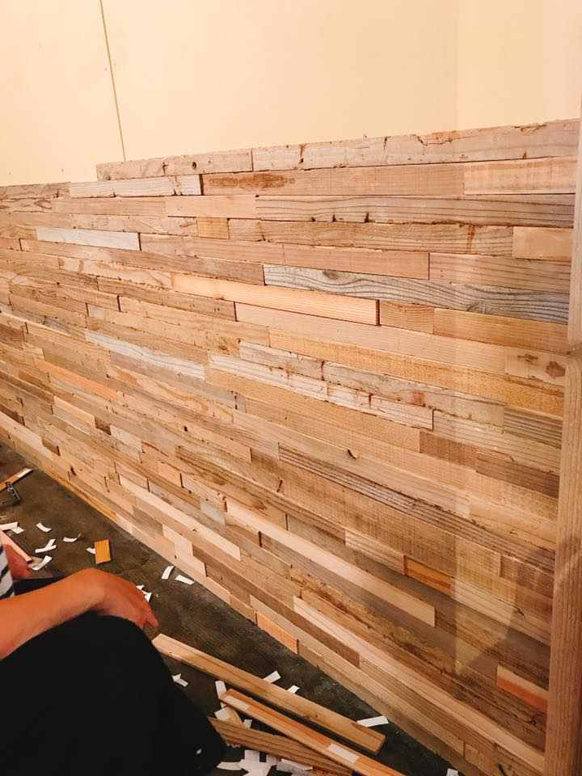


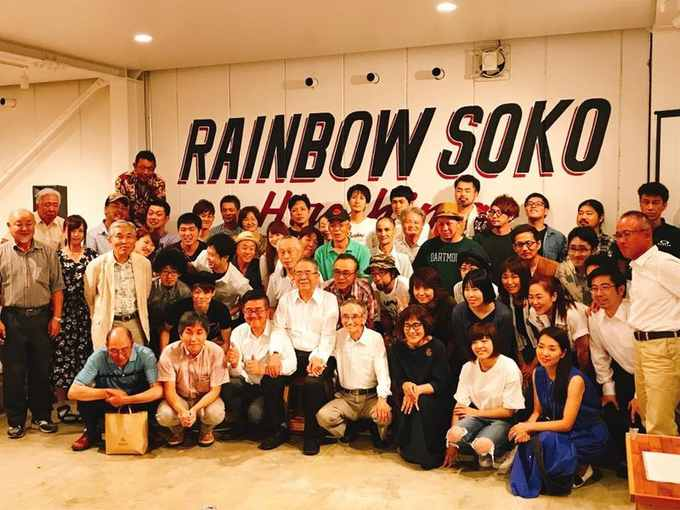

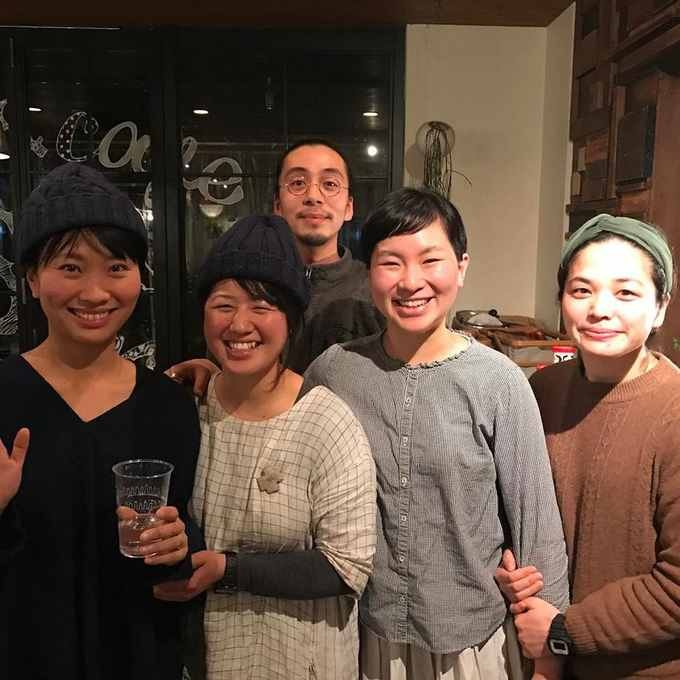


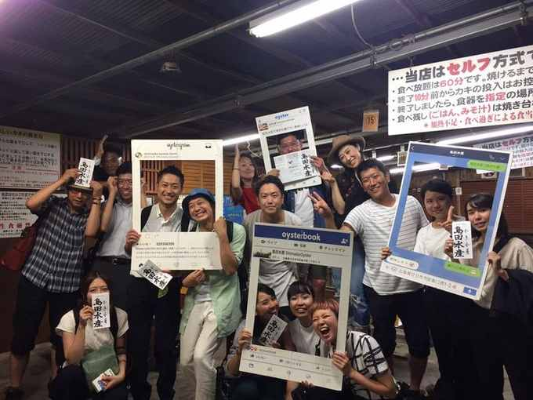
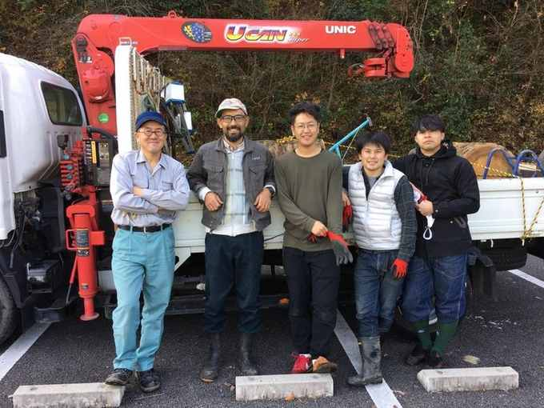


2016–17年。写っている人、いたら教えてください。


2016–17年に投稿した1,592枚から、48枚。写っている人、いたら教えてください。
2016.01–2017.12 ／ 投稿 494件 ／ 写真 1,592枚 ／ このページに 61枚
2017–18
捨てられるものを、もう一度
空き家と廃材に手を出し、会社をつくった2年
- 594
- 投稿
- 2,321
- 写真
- 392
- 書いた日
僕は元々アパレル業界にいて業界に蔓延している洋服の「大量廃棄」の現実に
嫌気がさして起業した背景があり2020年11月17日
ここで、背骨が見えてきます。
服。廃材。空き家。
対象が変わっただけで、
やっていることは同じだった。
2017年6月、団地の空き家について何気なく投稿したら人が集まって、 「空家をおもしろく利用する会」ができました。誰にも頼まれていないのにｗ
空家を持て余してる人や、自分の受け継いだ空家や土地をなんとかしたいと思っている人、
空家のリノベーションに興味ある人、単純になんかおもしろそうwってゆう人達から
何かしたいね！と言ってもらえ、、2017年6月8日
同じ年の11月、WOODPROの中本社長と「廃材の森」を作りました。 全国から引き取った足場板の古材のうち、どうしてもリユースしきれない3分の1を、 限りなくゼロに近づけるための場所です。
空き家は活用できる資産です！2018年9月22日
12字。
読み返して、自分でも笑ってしまいました。
この頃の僕は、よっぽど確信していたんだと思います。
空き家は、負債じゃなくて資産だ。
この言い換えが、そのまま今の会社の仕事になっています。
ヤスムラ ミチヨシ当時の投稿今日は北広島にて漆喰塗りワークショップ2日目を開催しております♪ 1日目に仕上げた箇所の確認をしながら新しいメンバーで取り組んでいます(^^)

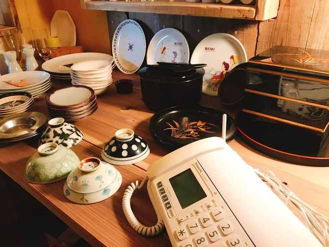
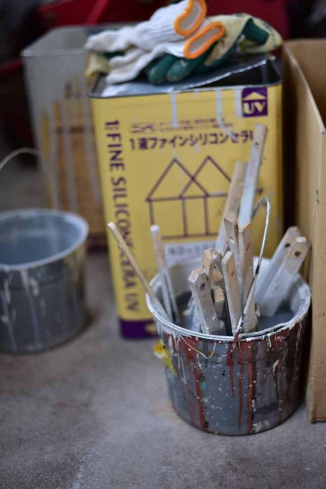

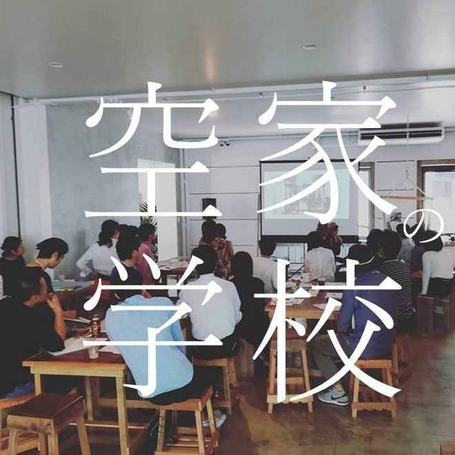
2018年5月17日、山根麻里さん・藤井ちえさんと株式会社TOWN DESIGN LABOを設立しました。
いまの僕の本拠地になる会社です。空き家も、廃材も、キッチンカーも、〈もう一度使えるもの〉に変えていきます。
ただ、現場に追われて設立の報告を忘れて、公表は3か月遅れています。
気がつけば、もう8月…。2018年、あっという間に半分以上過ぎてしまいました。
ご報告が遅くなってしまったのですが、
実は5月17日に新会社を設立いたしました！2018年8月24日
自分の会社をつくったことを、3か月忘れる。
現場に入り込むと、そうなってしまいます。
この癖はいまも直っていなくて、5年後には「ヴィジョンを人に共有するのが苦手」と自分で書いていました。
つくるのは好きなのに、伝えるのが下手なんですよね。
会社をつくった年に、空き家について書いた文章が残っています。
ここ最近メディアでもよく取り上げられ、問題視されるようになってきている空き家問題。
ゴミが放置されたり、火事のリスクがあったり、いつの間にか知らない人が住み着いてしまったり…。
空き家の問題点をあげればキリがありません。2018年8月30日
このころは、建物のほうに問題があると思っていました。
だから最初は、整理の仕方も、修繕の方法も、賢い相続の仕方まで幅広く答えられるように
「空き家の学校」というコンテンツを開いて、持ち主と使いたい人をつなぐことをやっていました。
「空き店舗めぐり」が人気になったのも、この頃です。
個人で物件を探すときには見落としてしまう情報を、プロと一緒に見て回れる。
来てくださった方が求めていたのは、たぶんそこでした。
ただ、続けているうちに気づきました。
課題の根っこは、もっと手前にありました。持ち主のご家庭の、かなり個人的なところです。
いちばん多いのが、これです。
親御さんが老人ホームに入られるとき、多くの方は「いつでも戻れるように」と実家をそのまま残されます。
でも、実際に戻れることはまれです。ほとんどの方が、そのまま老人ホームで過ごされます。
だから本当は、入居された初期の段階で、賃貸に出すか売却するかを決めたほうがいい。
いまはその案内と、お手伝いを中心にやっています。空き家になる前のケアです。
それでも、解けていない課題があります。
- 増え続ける数に対して、ケアする側のリソースが足りていません
- 空き家といっても価値は立地で決まるので、立地の悪い家は活用が進みません
- それもアイディア次第なので、まず空き家の情報を集約して、立地に合わせた活用案を広く知らせるべきです
- ただ、それを誰がやるのか。ここが、いちばん大きな課題として残っています
ヤスムラ ミチヨシ当時の投稿明日は廃材の森でモノづくり体験はいかがですか？ 参加は無料、プロの制作を見学できるチャンスです♪ 僕は新元号にちなんだモニュメントでもつくろうかな？？

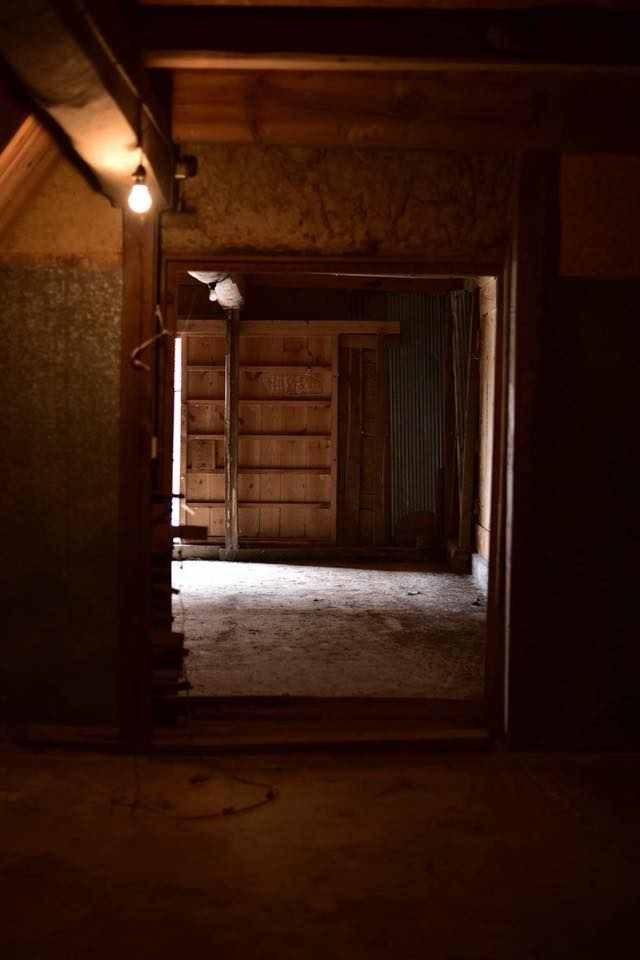


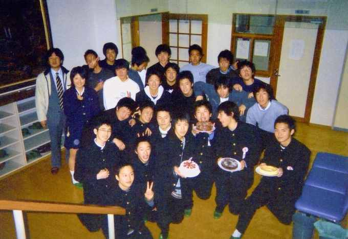

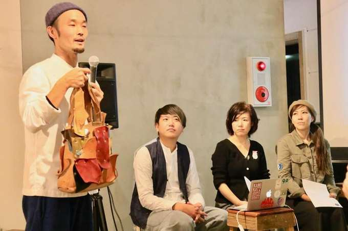
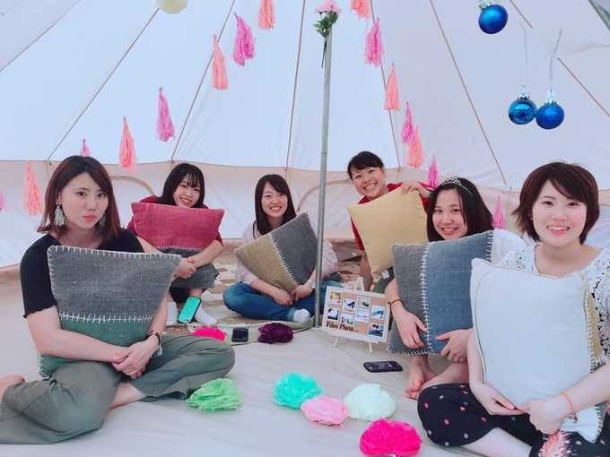


2017–18年。写っている人、いたら教えてください。
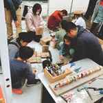


2017–18年に投稿した2,321枚から、20枚。空き家の学校と、まちを歩いた日。
2017.01–2018.12 ／ 投稿 594件 ／ 写真 2,321枚 ／ このページに 32枚
第四章
制度の外にいる人へ
【豪雨とコロナ】 行政の線からこぼれた人のところへ
2018〜2020年
- 777
- 投稿
- 3,602
- 写真
- 553
- 書いた日
2018年7月、西日本豪雨。
行政の給水所はありました。でも、そこへ行けない人がいました。
岸田祐美さんが自宅の井戸を近所に開放してくれました。それをきっかけに、 一人暮らしの高齢者、身体の不自由な人、高台に住む世帯、 海外から働きに来ている人の家を一軒ずつ回りました。 毎日1000リットル近い生活用水を配って、約1か月続けて、断水の復旧まで走りきりました。
300円から支援できます。
そんなに大金は必要ありません。2018年7月12日
300円。
金額を出したそばから、自分でハードルを下げにいっています。
たぶん、断られるのが怖かったんだと思います。
同じ月、被災の自粛でイベントが軒並み中止になって、 小商いの事業者が二次的な打撃を受けていることに気づきました。 そこで、キッチンカー事業者から1日1万円分の商品を買い取って、 被災地で無料配布する「Free Food Project」を始めました。
我慢でも、慈善でもなく。
経済と賑わいを回しながら支える、というやり方です。
このやり方は、2年後のコロナで、形を変えてもう一度出てきます。
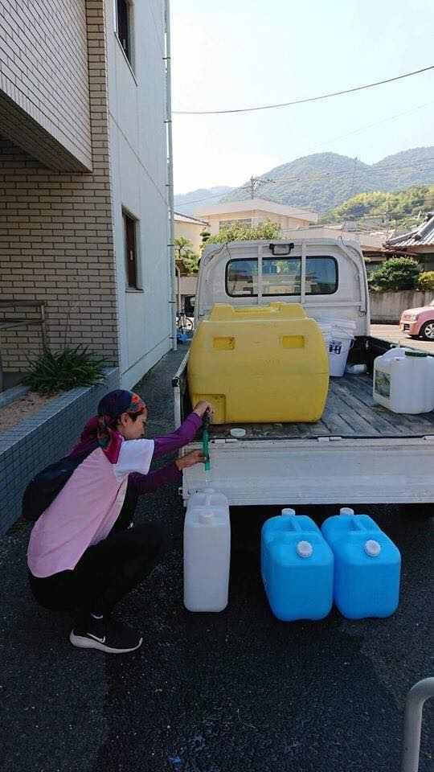


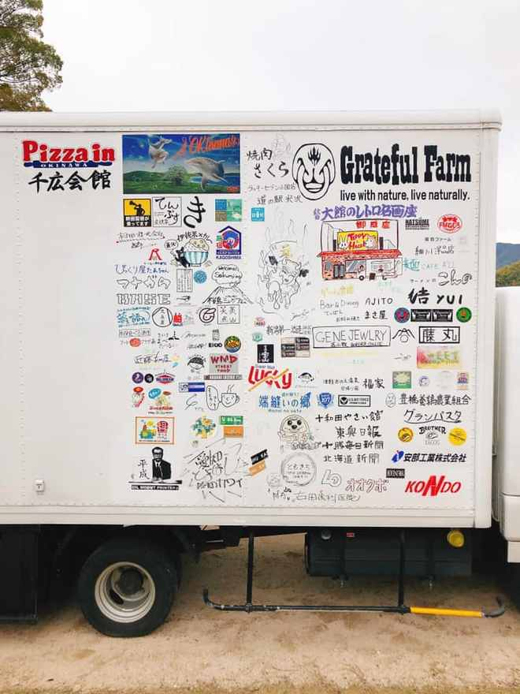
2020年、コロナ。広島県の休業要請に、キッチンカーは含まれていませんでした。 補償が出ない。だから逆に「動ける」と気づきました。
今度は困っている店側ではなく、巣ごもりする住民のもとへ、キッチンカーを走らせました。
4月24日、住民に賛否を問う投稿を出しました。5日後に住宅地での販売許可を取って、
5月1日、大野の集会所で始めました。初日は想定の3倍、130客が来てくれました！
広島県の休業要請にはなんとキッチンカーは対象になっておりません。
というワケで、団地や住宅地にキッチンカーを誘致して食のマンネリ化を改善したいなと考えています。
皆さんに質問です、もし自宅の近くにキッチンカーが来てくれたら嬉しいですか？迷惑ですか？2020年4月24日
その裏で、僕はこう書いていました。
収入が全くの0に近い状態となってしまい先が見えない2020年5月5日
収入がほぼゼロの月に、他人の困りごとから手をつけています。
偉いね、という話じゃありません。
たぶん、自分のことを考えると立てなくなるから、他人のことを考えていただけだと思います。
ヤスムラ ミチヨシ当時の投稿＊キッチンカーを巣篭もりしている住民の為に役立てるボランティア！＊ 初日が無事に終了致しました〜！ 思いついて即準備したのでロクな告知もできていない中、想定の3倍の市民にご利用頂けるました！ その数なんと130客！ 客層はお子様連れのファミリー世代が一番多く、ついでシニア層という結果でした。 客数はレジ通過数なので、1客あたり平均人数が3人とすると400人近い市民の方にご利用頂けました！
ヤスムラ ミチヨシ当時の投稿いつもとは違う暑〜い夏休み❗️ そんな中、子供達の思い出づくりの為に 今日もやまだ屋おおのファクトリーにて かき氷の🍧無料配布🍧を実施してまーす🍧 お近くを通ったら是非食べてみてくださいね〜💁♂️


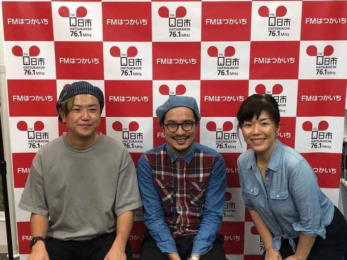


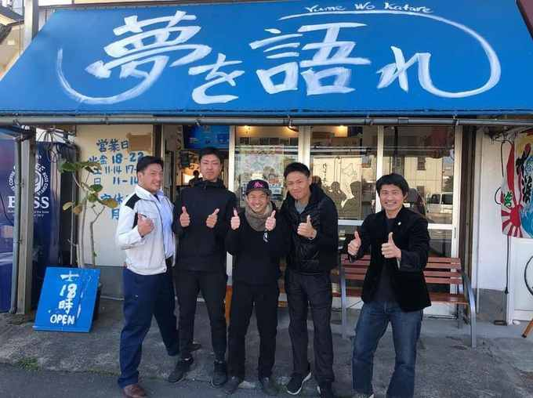


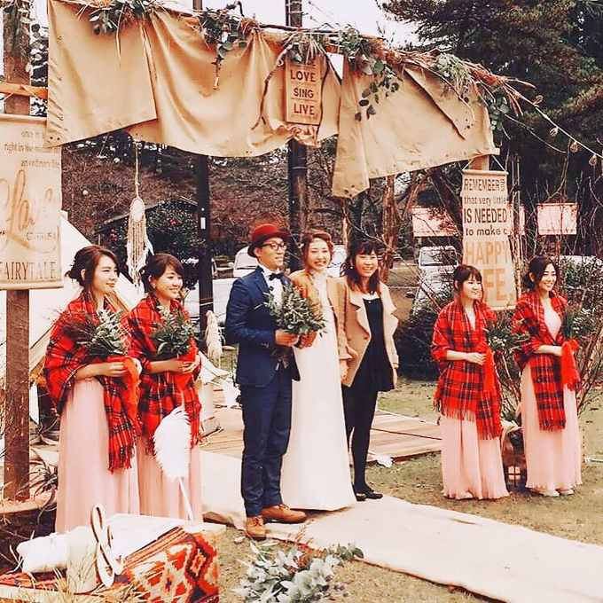
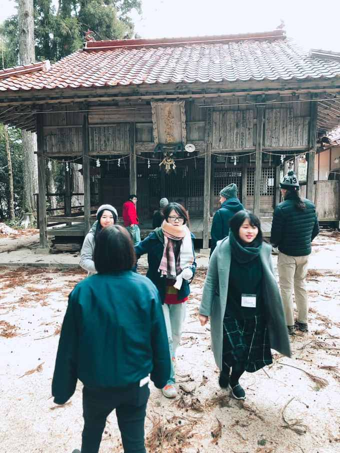

2018–20年。写っている人、いたら教えてください。


2018–20年に投稿した3,602枚から、17枚。あの夏、水を運んだ人たち。かき氷に並んだ人たち。
2018.01–2020.12 ／ 投稿 777件 ／ 写真 3,602枚 ／ このページに 25枚
2019年9月
財務省から、依頼を頂きました
中国5県の財務局職員のみなさんへ、1時間
2019年9月6日付で、1通の文書が届きました。
差出人は財務省財務総合政策研究所。件名は「講師の派遣依頼について」。
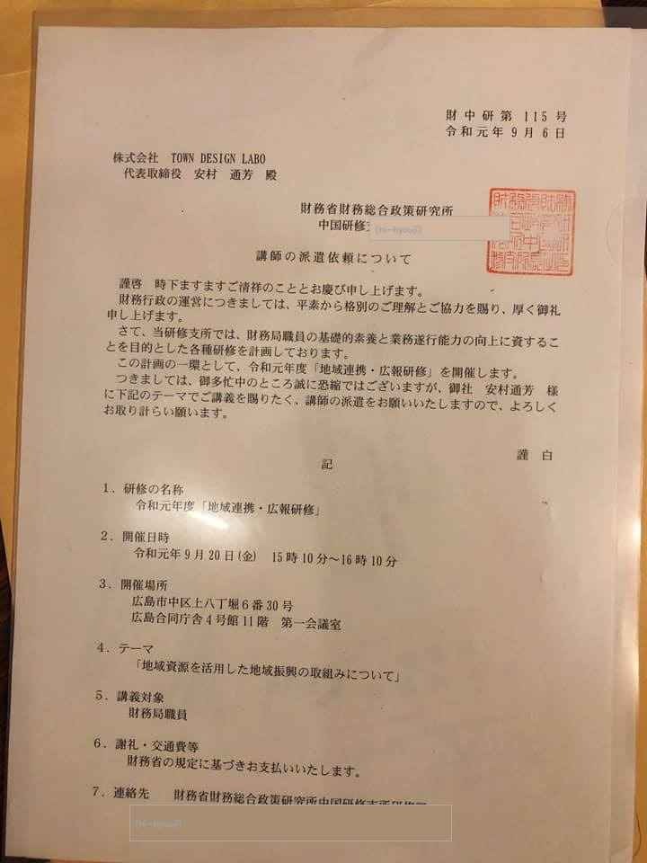
令和元年度の地方研修「地域連携・広報研修」。
9月20日（金）15時10分から16時10分まで。広島合同庁舎4号館11階、第一会議室。
テーマは「地域資源を活用した地域振興の取組みについて」。講義対象は、財務局職員。
あとで日程表を見返すと、その日は9人が講師として並んでいて、
ほかの方はみんな財務局と経済産業局の職員さんでした。
なんで僕がここに混ざっているんだろうと、当日もずっと思っていました。
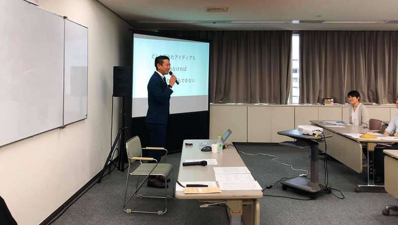

本日は「財務省財務総合政策研究所」さまのご依頼で
中国5県の財務局職員の皆様へ講義をさせて頂きました。
財務局職員さん向けの研修ということで緊張感のある空気を予測していたのですが、
非常に暖かく優しい空気で迎えて頂けて嬉しかったです。
本日研修に参加して頂いた皆様、ありがとうございました2019年9月21日
この日のことで、ひとつ思い出したことがあります。
依頼のときに「プロフィールについても詳しく知りたい」と言って頂いていたので、
1時間のうち前半は、自分の来歴を話させて頂きました。
- 1984年、広島市佐伯区五日市生まれ。18歳まで五日市で育ちました
- 高校を出てアパレルチェーンに就職。中四国の店舗をまわって、東京本部へ移りました
- 広報宣伝とウェブマーケティングを担当しました。その頃にオンラインショップが伸びて、年商が20億円を超えるところまでいきました
- ただ、そのうちに大量廃棄と低賃金労働という、この産業が抱えている矛盾が見えるようになりました
- 27歳。千葉にいたときに東日本大震災。物資が届かない、地域が孤立するという現実を目の前で見ました
- 30歳で広島へ戻って、KAZARIを始めました
自分の生い立ちなんて、誰も興味がないと思っていました。
それを先に聞かせてほしいと言って頂けたのが、この日の依頼でした。
後半に話したのは、グランピングとレインボー倉庫と空き家の活用です。
どれも、このページのここまでに出てきたものばかりでした。
特別なことは、何も話していません。
2019.09.20 ／ 財中研第115号 ／ 令和元年度地方研修「地域連携・広報研修」
2021–24
つくる側へ
広島産キッチンカーを作り、貸し始めた3年
- 614
- 投稿
- 3,274
- 写真
- 484
- 書いた日
2021年5月、3度目の緊急事態宣言の最中に、Facebookに一行だけ相談を書きました。
こんなご時世でも生き残る為に、広島県産のキッチンカーを製造販売をしたいと考えています。
特に内装や調理器具などの設備を整えてくれそうな方！
是非相談させてください！2021年5月
7月に事業再構築補助金（コロナで打撃を受けた事業者向けの、国の競争型の補助金）へ応募して、9月に採択されました。
翌2022年8月末、「オール広島で作った初号機」が完成しました！
支援する側から、作る側へ。イベント屋・場づくり屋だった僕が、初めて自分のプロダクトを持ちました。
ヤスムラ ミチヨシ当時の投稿モビリティ制作の現場を見学してきました！ バスケットゴールが飛び出してきたり、丸々移動するホテルになったりいずれも通常のキッチンカーや移動販売車の概念を覆す素晴らしい作品達でした👍 新しい時代のモビリティの在り方にワクワクしどうしの出張でした♪
狙いは、自分の売上じゃありませんでした。
1日のレンタル相場が4万〜10万円のところを、最安4,500円から。
設備投資ができない人でも、飲食を始められるように。
儲かる値付けではないですが、こっちのほうが断然おもしろいです。


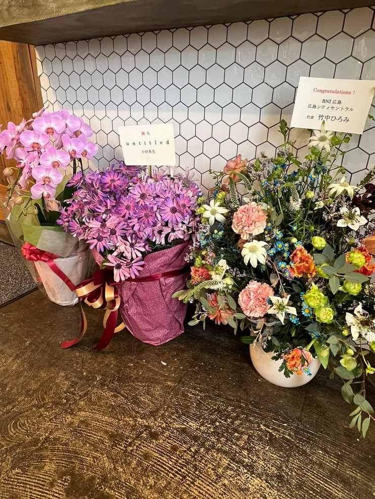
並行して、他の事業者の事業計画づくりも手伝っている。
2021年度のこの補助金では、僕が申請を手伝った41事業者のうち、第4期までに4分の3が採択されました。
そのぶん自分の売上は後回しでしたが、こういう仕事のほうが性に合っています。
2022年、One Smile Foundationの辻早紀さんと出会います。
最近、これまでにも増してなにやってる人なんですか？と聞かれます。
自分なりの解釈としては、大企業からメンタル不調でリタイアしてから、
自分とその周りの顔が見える人達の課題解決ができればいいや〜と
残りの人生そんな感じで生きるだろうと思ってました。
でも、One Smile Foundationと出逢ってあきらかにマインドが変わったのを感じています。2022年9月2日
8年間ずっと「顔が見える範囲」に自分を限定していたことを、僕はここで認めています。
街のカメラが笑顔を検知するたびに寄付が生まれる仕組みです。
寄付を、富のある人だけのものから解き放つ、という話でした。
顔の見える範囲から、その外へ。対象のスケールだけが変わって、やっていることは同じでした。
ヤスムラ ミチヨシ当時の投稿今日は朝からずーっとZOOMで打合せ。 那須塩原市、横浜市、東京都。 ZOOMが普及してくれたおかげで移動しなくてもいろんな人達と繋がれて改めてありがたいな〜と思います。 しかし、笑顔というコンテンツはどこにでも刺さりまくりますね〜😊 次のアイディアの実現化も楽しみ♪
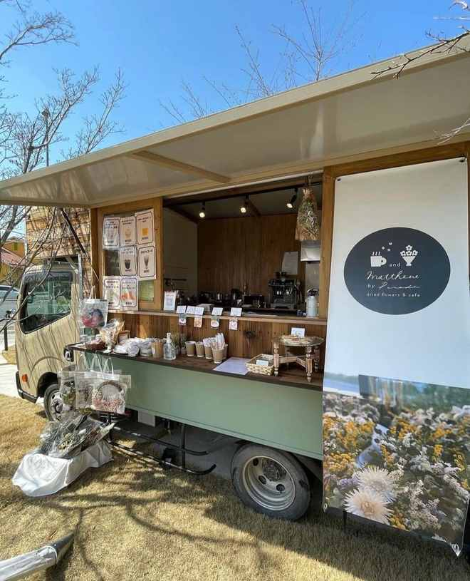


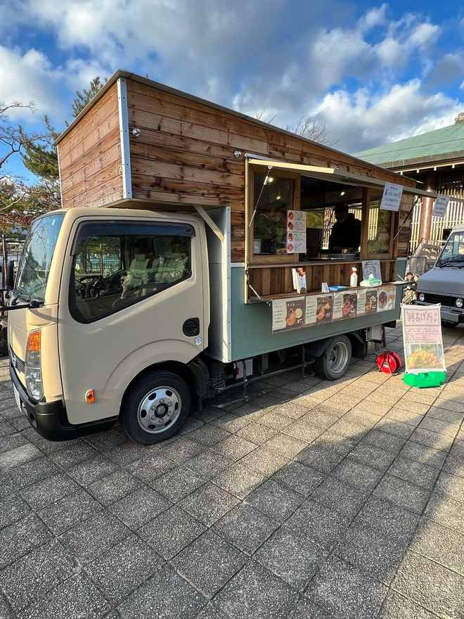

2023年3月、レインボー倉庫の中にカフェを開きました。 クラウドファンディングは127%で着地して、6月にはレジ通過が月1,000組を超えました！
そして同じ年の10月、6年前に自分の手で壁を塗った倉庫の運営を、自分の会社で引き継ぐことになります。
開店当時から関わってきたレインボー倉庫広島を引き継げることとなり、
非常に嬉しい気持ちでいっぱいです！！2023年10月
借りていた場所が、自分の責任になりました。
13年分をぜんぶ数えてみて、同じ場所に別の立場で二度立ったのは、ここだけでした。
6年前に自分で壁を塗っていた頃の僕に、教えてやりたいですｗ
ヤスムラ ミチヨシ当時の投稿本日、広島から「世界初のモビリティプロダクト」がリリースされることが決まりました！ 構想1年。 広島県を熱くするプロジェクトがまた1つ誕生します。 続報をどうぞお楽しみに！


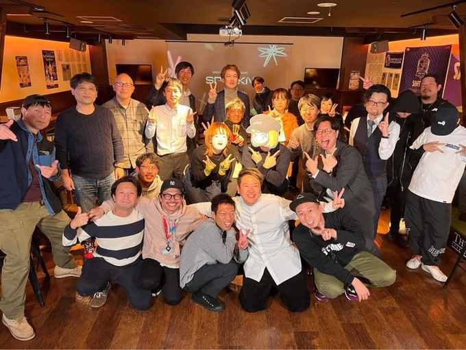
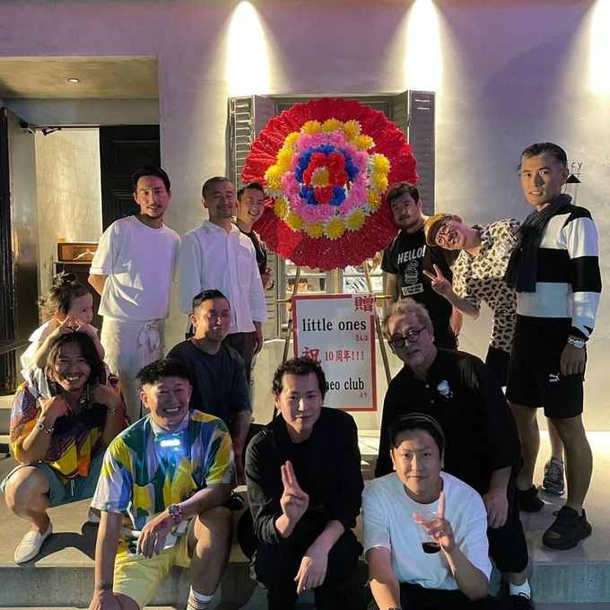


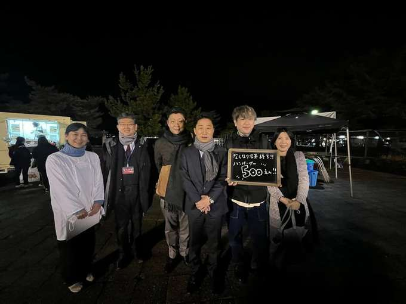


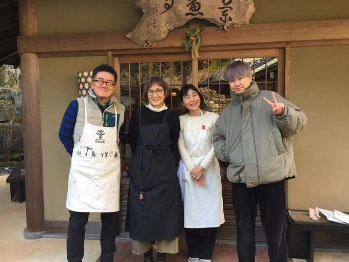


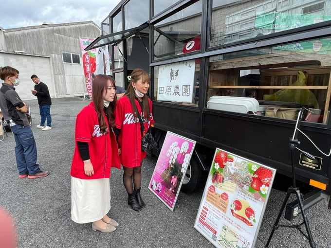
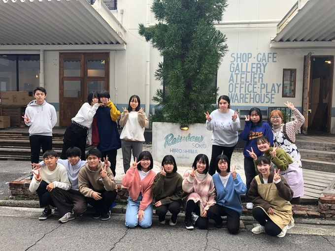


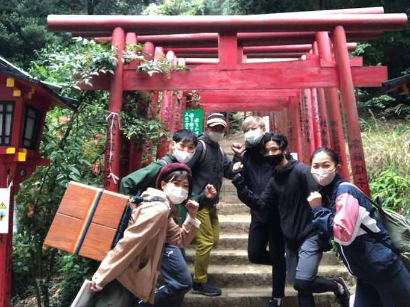
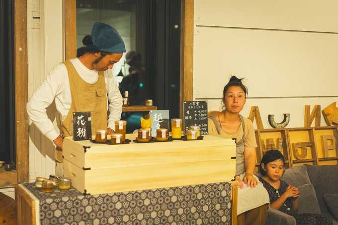


2021–23年。写っている人、いたら教えてください。


引き継いだ倉庫の、ある夜。この中に、来てた人もいると思います。
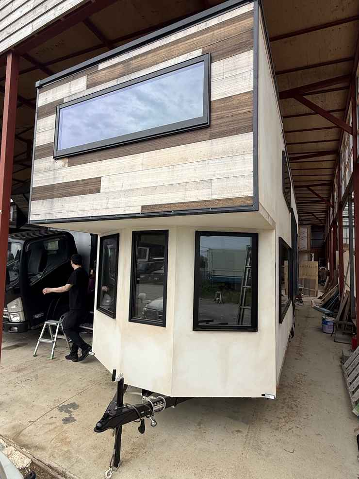
そしていま、キッチンカーの次はトレーラーハウスをつくっています。
使われていない場所に、動かせる建物を。やることは、13年前と変わりません。
最初は、見学からでした。2021年11月、モビリティ制作の現場を見せてもらいます。
バスケットゴールが飛び出してきたり、丸々移動するホテルになったり
いずれも通常のキッチンカーや移動販売車の概念を覆す素晴らしい作品達でした2021年11月24日


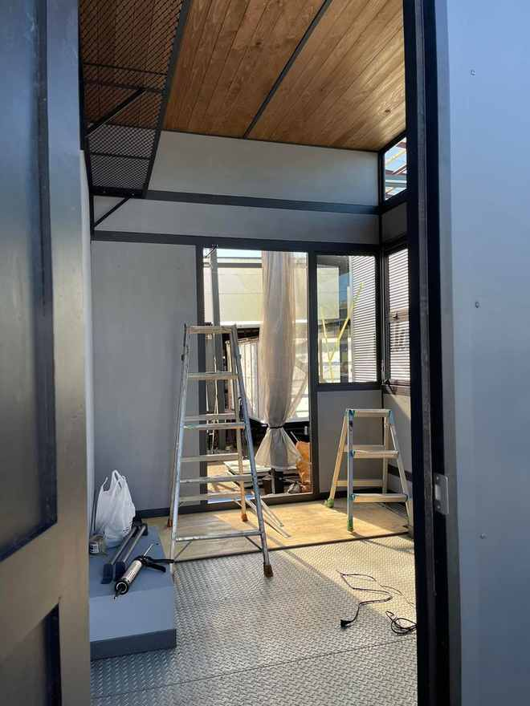

トレーラーハウスは、広島だけでは作れませんでした。
2023年11月、関東の製造パートナーのところへ、広島から専門家チームで乗り込みます。
トレーラーやコンテナなど様々なジャンルのモビリティの知見を持つみなさんのおかげで、
より洗練されたモビリティが今後続々と生まれていきそうです！！2023年11月14日
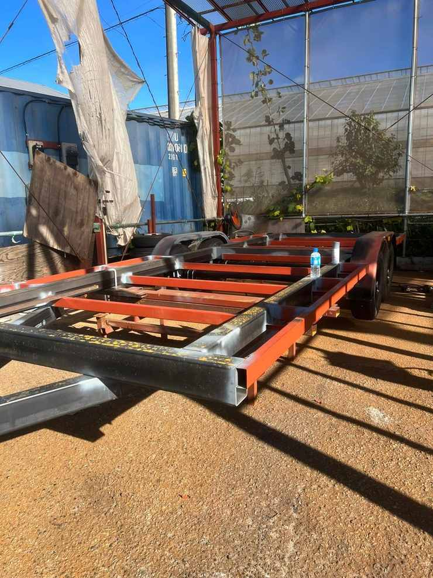


鉄の骨組みに、屋根がついて、厨房が入って、走れる建物になります。
基礎を打ちません。だから、いらなくなったら動かせます。空き地に置いて、置いた分だけ返せます。
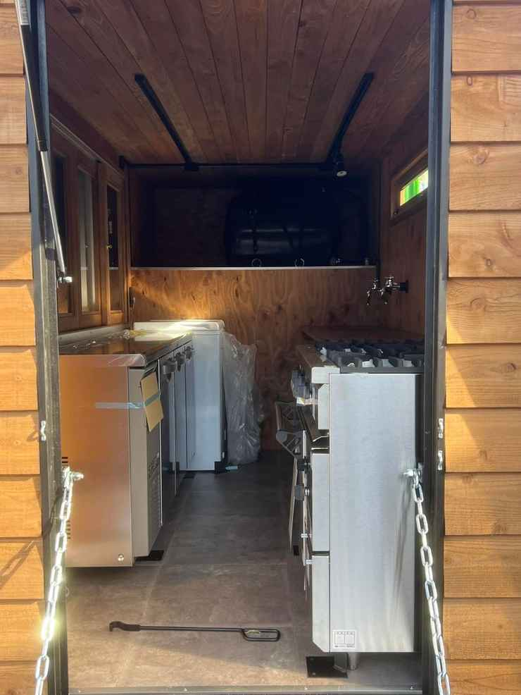
2024年1月、次の型を見に行った日に、こんなことを書いていました。
今回の地震災害で得られた教訓も取り入れながら、災害対応可能なモデルも今後作っていきたいなぁ
①水は捨てずに98％浄水して再利用、もしくは河川から水を確保して災害時には簡易給水所に。
②太陽光発電＋蓄電池で移動型発電所に。2024年1月12日


2018年の豪雨で、行けない人のところへ井戸の水を運んだこと。
2020年、休業要請の外にいた人のところへキッチンカーを走らせたこと。
どちらもこの設計に入っています。困っている人のところへ動いていく建物を、まだ作っている途中です。

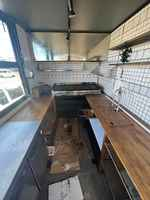


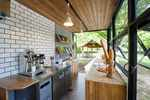


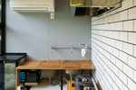
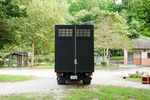


2021–24年に投稿した3,274枚から、30枚
2021.01–2024.01 ／ 投稿 614件 ／ 写真 3,274枚 ／ このページに 55枚
結び
いま
2024年1月1日、能登半島地震。その翌朝に書いていました。
今、僕ができることをやります。2024年1月2日
9年前も、同じことを書いていました。
自分にできることで貢献しよう。2015年9月3日
対象は変わりました。
やっていることは、変わっていません。
服。廃材。空き家。補償から漏れたキッチンカー。制度が届かない人。眠っていた善意。
13年、ずっと同じことをしています。

いまも、だいたいこういう顔ぶれです。


2023–24年から、18枚。いまも、だいたいこういう顔ぶれです。

冒頭に書いた「毎年恒例の誕生日企画」。
35歳のときは、こんなふうに書いていました。
数年前から実施している毎年恒例の誕生日企画ですが今年は僕の半生を振り返る年表を公表したいと思います。
(需要があるかないかは知りませんw)2019年9月6日
その2019年の年表には、21歳の欄にこうあります。
「当時は目玉焼きすら作ったことがなく」。
同じ投稿に、こうもあります。
「現在のウチの次男は7歳にて朝御飯に勝手に目玉焼き作って食べてます」。
21歳の僕は、7歳の息子に負けています。
半生の記録に残っていたのは、だいたいそういう日付でした。
解説はしません。
そして42歳。
需要があるかないかは、今回も知りませんｗ
13年、どうやって取り組んできたか
やり方はいつも同じでした。順番も、だいたい決まっています。
- 【気づく】 統計や制度の陰に隠れて、数えられていない人を見つける。 「消滅可能性都市」も「休業要請の対象外」も、最初は自分に関係ない言葉でした。
- 【まず声をかける】 調査や計画より先に、目の前の人に聞きに行く。 コロナのときは「自宅の近くにキッチンカーが来たら嬉しいですか？迷惑ですか？」と住民に直接聞きました。
- 【小さく試す】 許可を取って、5日後には集会所で店を開いていました。 うまくいかなければ畳めばいい。動かせる建物にこだわるのも、たぶん同じ理由です。
- 【経済を回しながら支える】 我慢や慈善で終わらせない。 被災地では、キッチンカー事業者から商品を買い取って無料配布しました。支援する側も食べていける形にする。
- 【場所を残す】 一度きりで終わらせず、次の誰かが使える場所にしておく。 レインボー倉庫は、空家の学校も、災害時の物資置き場も、子ども食堂も引き受けています。
特別な能力はいりません。
必要なのは、気づいたときに、いちばん小さい一歩を今日やってみることだけでした。
若い人たちと、やってきたこと
気づけば、教える側に立つことも増えました。
専門知識があったからではありません。先にやってみた人が、次の人に渡すだけです。
- 【子ども食堂】 レインボー倉庫で定期開催。修道大学や山陽高校の学生たちがボランティアで食事を作りに来てくれました。
- 【ひろしまジン大学の理事】 広島にJターンした頃から憧れていた団体に、関わらせてもらえるようになりました。
- 【高校生のビジネスプランコンテストの審査員】 「高校生が考えたとは思えないレベル」の提案に、こちらが学ばされます。庄原では高校生の涙にもらい泣きしました。
- 【中学生から大人までのワークショップ】 AIの使い方、ものづくり、ウッドデッキ作りまで。参加費500円のものもあります。
- 【企業向けの講義】 ChatGPTやブロックチェーンの使い方を。最初は無料で実験的にやりました。専門的な話を、わかりやすく噛み砕く練習でもあります。
- 【先生たちとの対話】 山陽高校の先生方と「教育の在り方」や「本質的な学び」について語り合う場をもらっています。
学校の勉強はダメだったけど、好奇心が揺さぶられるコトに対する勉強は大好きなので、気の向くままに継続していました。2023年5月6日
学校の勉強はできませんでした。それでも、興味のあることだけは続けられた。
たぶんそれで、じゅうぶんです。
これから何かを始める人へ。
13年分を並べてみて、自分でも意外だったことがあります。
資格も、資金も、人脈も、最初は何もありませんでした。
知り合いが1人もいない町で、古着をネットで売るところから始めています。
やったことといえば、目の前で困っている人に声をかけて、できる範囲で試して、だめだったら次に行く。
グランピングは根付かなかったし、会社を作ったことを3か月忘れるような人間です。
それでも13年続けたら、こうなりました。
大きな計画があったわけじゃありません。
「使われていないもの」と「困っている人」を見つけて、間をつなぐ。
それだけを、対象を変えながら繰り返しただけです。
だから、いま何もない人にも、たぶんできます。
会社を辞めるかどうかで迷っている人には、立場によるとしか言えません。
ただ、いまの仕事に疑問があるなら、辞めても何か道はあると思います。
僕の場合は、直属の上司との人間関係も、辞める決め手のひとつでした。
かっこいい理由ではありませんが、たぶんそんなものです。
ただ、ひとつ分かったことがあります。
こういうものを最後まで読んでくれる人が、ちゃんといます。
今年は、あなたです。
で、これは僕の誕生日企画なわけですが。。
せっかくなので、あなたの誕生日も引かせてください。
その日、僕が何をしていたか。13年分から出てきます。
おまけ
ここまでスクロールした人は、ほとんどいないはずです。
だからここからは、ほぼあなた専用ということになります。
何が出るかは、僕にも分かりません。
このビューアではボタンが動きません。
ファイルを保存して、SafariやChromeなどのブラウザで開いてください。
この13年に、写っていた人たち
13年分の写真から、顔を集めました。
自分の顔を見つけてクリックすると、その顔が写っている写真が出てきます。
知っている顔があったら、その人にも教えてあげてください。
写真はすべて、当時Facebookに公開したものです。
載せたくない写真があれば、遠慮なく言ってください。すぐ外します。
脱サラして13年、いちばんの誤算は何かと聞かれたら、AIの登場だと答えます。
これがあるのとないのとでは、サラリーマンとしての働き方も、たぶん大きく変わります。
ChatGPT-4も登場し、いよいよ企業での導入も待ったなしの状況になってきましたね。。
僕もGPT-3の登場からいろいろ機能を使い倒してきましたが、
いよいよ今月末から企業様向けに使い方を講義することになりました。2023年3月17日
そして、このページも13年分をAIに読ませて作りました。
13年でいちばんの誤算が、13年を数え直す道具になっています。
これ、あなたの分も作れます
正直に書きます。13年分を、僕は読んでいません。読み切れる量ではありませんでした。
やったのは、Facebookから自分のデータを丸ごと受け取って、AIに読ませて、数えてもらったことです。
人に見せるつもりで作りましたが、いちばん驚いたのは自分でした！
- 【データを取り寄せる】 Facebookの設定から、自分の全データのダウンロードを申し込みます。 形式はHTML、期間は全部です。準備ができたら通知が来ますので、早めに受け取ってください。
- 【AIに読ませる】 届いたファイルをAIに渡して、投稿と写真を数えてもらいます。 僕は投稿1,992件、写真8,633枚でした。渡すところだけは少し手間がかかるので、noteに書きます。
- 【静かな時期を探す】 投稿が減っている年と、写真が1枚もない月を出してもらいます。 僕には20か月の空白がありました。忘れていた時期を、記録のほうは覚えていました。
- 【写真を選ぶ】 顔が写っている写真を候補に出してもらい、最後は1枚ずつ自分の目で確かめました。 写っている方に迷いが残る写真は外します。ここは人がやったほうがいい所です。
- 【1枚に組む】 文章はAIに書いてもらって、僕が何度も直しました。そのままだと自分の言葉になりません。 数えるところまでは、どなたでも同じにできます。組み上げる所は、少し手が要りました。
僕は40を過ぎて、去年の自分が何をしていたかも曖昧です。それでも記録は残っていました。
くわしいやり方は、いまnoteにまとめています。
このページに入れた仕掛けは、ぜんぶ書きます。グラフも、13年カレンダーも、
誕生日を引くところも、顔ウォールも、どういう理屈で動いているか全部です。
つまずいた所も、うまくいかなかった所も、そのまま載せます。書き上がったら、ここでお知らせします！
ご自分の分もやってみたい方は、コメントで「やってみたい」とだけ教えて頂けると嬉しいです。
ここまで読んで頂いて、ありがとうございます！
たぶんあなたとは、どこかの章で会っています。
きょう9月6日で、42歳になりました。
最後まで付き合って頂いたことが、今年いちばんのお祝いです。
お願いはひとつだけです。
この投稿のコメント欄に、いまどこで何をしているか、一行だけ書いて頂けたら嬉しいです。
「いま大阪です。子どもが高校生になりました」くらいで十分です。
このページの顔の中に自分がいた方は、そのことも足してください。
お祝いの言葉だけでも、もちろん嬉しいです！
そのうしろに一行あるだけで、僕にはその人の13年が分かります。
ひとつずつ読ませて頂きます。
9月6日の投稿が公開されたら、ボタンはコメント欄へ直行します。それまではFacebookのプロフィールへつながります。
これから何かを始めたい学生さんや、いま迷っている方の相談も待っています。
書きにくいことは、Facebookのメッセージにどうぞ。
届かないこともあるので、コメントに一言頂ければ、僕から伺います。
うまくいかなかった話のほうが、たぶん役に立ちます。